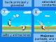
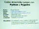
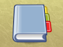
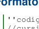

Referencia
Esta sección incluye una serie de artículos, libros y ejemplos con el motivo de promover el aprendizaje relacionado con el desarrollo de programas.

Articulos
Desarrollando programas se suele utilizar toda clase de conceptos, términos y metodologías. Esta sección es solo una pequeña reseña de las técnicas y herramientas que encontrará de utilidad a la hora de crear videojuegos.

Ejemplos y rutinas
Se incluyen una serie de pequeños programas junto a su código fuente para utilizar, modificar y estudiar. De forma tal que pueda comenzar a realizar sus primeras pruebas de programación aquí.

Tutoriales y conferencias en Video
Muestra una serie de videos relacionados con el desarrollo de juegos.

Libros y manuales
Esta sección incluye varios libros acerca de programación, tecnologías y opinión de diversos autores. Puede descargar los textos con total tranquilidad ya que los mismos son de libre difusión.
